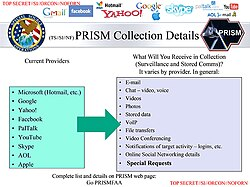

Tax avoidance by Google
Source: https://en.wikipedia.org/wiki/Criticism_of_Google
Category: company__depth2
Depth: 2
Summary
Criticism of Google includes concern for tax avoidance, misuse and manipulation of search results, its use of others' intellectual property, concerns that its compilation of data may violate people's privacy and collaboration with the U.S. military on Google Earth to spy on users, censorship of search results and content, its cooperation with the Israeli military on Project Nimbus targeting Palestinians, and the energy consumption of its servers as well as concerns over traditional business issues such as monopoly, restraint of trade, antitrust, patent infringement, indexing and presenting false information and propaganda in search results, and accusations that the company functions as an "Ideological Echo Chamber". Google's parent company, Alphabet Inc., is an American multinational public corporation invested in Internet search, cloud computing, and advertising technologies. Google hosts and develops a number of Internet-based services and products, and generates profit primarily from advertising through its Google Ads program.
Images

Full Article
Criticism of Google includes concern for tax avoidance, misuse and manipulation of search results, its use of others' intellectual property, concerns that its compilation of data may violate people's privacy and collaboration with the U.S. military on Google Earth to spy on users, censorship of search results and content, its cooperation with the Israeli military on Project Nimbus targeting Palestinians, and the energy consumption of its servers as well as concerns over traditional business issues such as monopoly, restraint of trade, antitrust, patent infringement, indexing and presenting false information and propaganda in search results, and accusations that the company functions as an "Ideological Echo Chamber". Google's parent company, Alphabet Inc., is an American multinational public corporation invested in Internet search, cloud computing, and advertising technologies. Google hosts and develops a number of Internet-based services and products, and generates profit primarily from advertising through its Google Ads (formerly AdWords) program.
Google's stated mission is "to organize the world's information and make it universally accessible and useful"; this mission, and the means used to accomplish it, have raised concerns among the company's critics. Several of these criticisms fall into grey areas of law, since cyber law has not definitively addressed them. Shona Ghosh, a journalist for Business Insider, noted a growing digital resistance movement against Google.
Algorithms
See also: Attention economy and Filter bubble
The algorithms that generate search results and recommend videos on YouTube have been criticized for being designed to maximize user engagement by reinforcing users' pre-existing beliefs while also suggesting more extreme and less reliable content. Along with algorithms used on social media platforms, these algorithms have received substantial criticism as a driver of political polarization, Internet addiction disorder, and the promotion of misinformation, disinformation, violence, and other externalities. When Google's parent company Alphabet announced in September 2025 that it would reinstate YouTube creators that were banned for spreading misinformation about COVID-19 and the 2020 U.S. presidential election, it was criticized for prioritizing "free expression" over "facts" and placed within the context of the company's shift dating back to 2023. Aviv Ovadya argues that these algorithms incentivize the creation of divisive content in addition to promoting existing divisive content. Sally Hubbard argues that the monopoly‑like position of sites such as YouTube and Google Search contributes to the spread of fake news, whereas more competition in the market could make it harder to promote harmful content by just gaming one algorithm.
In 2025, Google ended its pledge not to use AI for weapons and surveillance.
Antitrust
From the 2000s onward, Google and parent company Alphabet Inc. have faced antitrust scrutiny over alleged anti-competitive conduct in violation of competition law in several jurisdictions. Antitrust scrutiny of Google has primarily centered on the company's dominance in the search engine and digital advertising markets. The company has also been accused of leveraging control of the Android operating system to illegally curb competition. Google has also received antitrust scrutiny over its control of the Google Play store and alleged "self-preferencing" at the expense of third-party developers. Additionally, Google's alleged discrimination against rivals' advertisements on YouTube has been subject to antitrust litigation. More recently, Google Maps and the Google Automotive Services (GAS) package have become the target of antitrust scrutiny.
European Union
Main article: Antitrust cases against Google by the European Union
The European Commission has pursued several competition law cases against Google, namely:
- Complaint that Google abused its position as a dominant search engine to favor its own services over those of competitors. In particular, Google operated a free comparison shopping website Froogle, which it abandoned in favor of a paid-placement-only site called Google Shopping. Other comparison sites complained of a precipitous drop in web traffic due to changes in the Google search algorithm, and some were driven out of business. The investigation began in 2010 and concluded in July 2017 with a €2.42 billion fine against the parent company Alphabet, and an order to change its practices within 90 days.
- Complaint opened in 2015 that the dominance of the Android operating system was abused to make it difficult for competing third-party apps and search engines to be pre-installed on mobile phones
- Complaint opened in 2016 that Google abused its market dominance to prevent competing advertising companies to sell ads to websites already using Google AdSense.
- In June 2023, the European Union (EU) accused Google of abusing its control of the EU market for buying and selling online advertising to undercut rivals.
U.S. antitrust issues
Main article: United States v. Google LLC (2020)
In testimony before a U.S. Senate antitrust panel in September 2011, Google's chairman Eric Schmidt said that "the Internet is the ultimate level playing field" where users were "one click away" from competitors. Nonetheless, Senator Kohl asked Schmidt if Google's market share constituted a monopoly – a special power dominant – for his company. Schmidt acknowledged that Google's market share was akin to a monopoly, but noted the complexity of the law. During the hearing, Mike Lee, Republican of Utah, accused Google of cooking its search results to favor its own services. Schmidt replied, "Senator, I can assure we haven't cooked anything." In testimony before the same Senate panel, Jeffrey Katz and Jeremy Stoppelman, the chief executives from Google's competitors Nextag and Yelp, said that Google tilts search results in its own favor, limiting choice and stifling competition.
In October 2012, it was reported that the U.S. Federal Trade Commission staff were preparing a recommendation that the government sue Google on antitrust grounds. The areas of concern include accusations of manipulating the search results to favor Google services such as Google Shopping for buying goods and Google Places for advertising local restaurants and businesses; whether Google's automated advertising marketplace, AdWords, discriminates against advertisers from competing online commerce services like comparison shopping sites and consumer review Web sites; whether Google's contracts with smartphone makers and carriers prevent them from removing or modifying Google products, such as its Android operating system or Google Search; and Google's use of its smartphone patents. A likely outcome of the antitrust investigations is a negotiated settlement where Google would agree not to discriminate in favor of its products over smaller competitors. Federal Trade Commission ended its investigation during a period which the co-founder of Google, Larry Page, had met with individuals at the White House and the Federal Trade Commission, leading to voluntary changes by Google; since January 2009 to March 2015 employees of Google have met with officials in the White House about 230 times according to The Wall Street Journal.
In June 2015, Google reached an advertising agreement with Yahoo!, which would have allowed Yahoo! to feature Google advertisements on its web pages. The alliance between the two companies was never completely realized because of antitrust concerns by the U.S. Department of Justice (DOJ). As a result, Google pulled out of the deal in November 2018. In September 2023 Google's antitrust trial United States v. Google LLC (2020) began at federal court in Washington, D.C. in which the DOJ accuses Google of illegally creating a monopoly by paying billions of dollars to smartphone vendors and mobile carriers to make Google's search engine the default service. The federal court ruled in August 2024 that Google did abuse its position in search engines and violated the Sherman Act. In September 2025, Judge Amit Mehta ruled that Google would not be required to divest of Chrome or Android, but would be barred from including search in exclusive contracts and required to share certain search index data and user interaction data. In January 2023, the DOJ filed a similar lawsuit, referred to as United States v. Google LLC (2023), accusing Google of monopolizing the digital advertising industry. The complaint alleged that the company had engaged in "anticompetitive and exclusionary conduct" over the previous 15 years. The trial began on September 9, 2024.
Android
On April 20, 2016, the European Union filed a formal antitrust complaint alleging that Google used its leverage over Android device vendors to require the mandatory bundling of its proprietary software, which hindered the ability of competing search providers to be integrated into Android and that barring vendors from producing devices running forks of Android both constituted anti-competitive practices. In June 2018, the European Commission determined a $5 billion fine for Google regarding the April 2016 complaints.
In August 2016, Google was fined US$6.75 million by the Russian Federal Antimonopoly Service (FAS) under similar allegations by Yandex. On April 16, 2018, Umar Javeed, Sukarma Thapar, Aaqib Javeed vs. Google LLC & Ors. resulted in the Competition Commission of India ordering a wider investigation into alleged anti‑competitive business practices related to Android. The investigations arm of the CCI should complete the wider probe in the case within 150 days, the order said, though such cases at the watchdog typically drag on for years. The CCI also said the role of any Google executive in the alleged abuse of the Android platform should also be examined. Google was fined $275 million in 2023 by the Indian government for issues related to Android and for pushing developers to use its in-app payment system.
"Jedi Blue" advertising market monopolization in collusion with Facebook
According to the group of 15 state attorneys general suing Google for antitrust issues, Google and Facebook entered into a price-fixing agreement termed Jedi Blue to monopolize the online advertising market and prevent the entry of the fairer header bidding method of advertisement sales on any major advertising platform. The agreement consisted of Facebook using the Google-managed system for bidding on and managing online ads in exchange for preferential rates and priority on prime ad placement. This allowed Google to retain its profitable monopoly over online ad exchanges, while saving Facebook billions of dollars on attempts to build competing systems. Over 200 newspapers have sued Google and Facebook to recover losses incurred by the collusion. Google admitted that the deal contained, "a provision governing cooperation between Google and Facebook in the event of certain government investigations." Google has an internal team called gTrade dedicated to maximizing Google's advertising profits, reportedly using insider information, price fixing, and leveraging Google's relative monopoly positions.
Criticism of search engine
Possible misuse of search results
In 2006/2007, a group of Austrian researchers observed a tendency to misuse the Google engine as a "reality interface". Ordinary users as well as journalists tend to rely on the first pages of Google Search, assuming that everything not listed there is either not important or simply does not exist. The researchers say that "Google has become the main interface for our whole reality. To be precise: with the Google interface, the user gets the impression that the search results imply a kind of totality. In fact, one only sees a small part of what one could see if one also integrates other research tools".
Eric Schmidt, Google's chief executive, said in a 2007 interview with the Financial Times: "The goal is to enable Google users to be able to ask the question such as 'What shall I do tomorrow?' and 'What job shall I take?'". Schmidt reaffirmed this during a 2010 interview with The Wall Street Journal: "I actually think most people don't want Google to answer their questions; they want Google to tell them what they should be doing next."
Numerous companies and individuals, for example, MyTriggers.com and transport tycoon Sir Brian Souter, have voiced concerns regarding the fairness of Google's PageRank and search results after their web sites disappeared from Google's first-page results. In the case of MyTriggers.com, the Ohio-based shopping comparison search site accused Google of favoring its own services in search results (although the judge eventually ruled that the site failed to show harm to other similar businesses).
Danger of ranking manipulation
See also: Search engine manipulation effect and Search neutrality
PageRank, Google's page ranking algorithm, can and has been manipulated for political and humorous reasons. To illustrate the view that Google's search engine could be subjected to manipulation, Google Watch implemented a Google bomb by linking the phrase "out-of-touch executives" to Google's own page on its corporate management. The attempt was mistakenly attributed to disgruntled Google employees by The New York Times, which later printed a correction.
Daniel Brandt started the Google Watch website and has criticized Google's PageRank algorithms, saying that they discriminate against new websites and favor established sites. Chris Beasley, who started Google Watch-Watch, disagrees, saying that Mr. Brandt overstates the amount of discrimination that new websites face and that new websites will naturally rank lower when the ranking is based on a site's "reputation". In Google's world, a site's reputation is in part determined by how many and which other sites link to it (links from sites with a "better" reputation of their own carry more weight). Since new sites will seldom be as heavily linked as older more established sites, they aren't as well known, won't have as much of a reputation, and will receive a lower page ranking.
In testimony before a U.S. Senate antitrust panel in September 2011, Jeffrey Katz, the chief executive of NexTag, said that Google's business interests conflict with its engineering commitment to an open-for-all Internet and that: "Google doesn't play fair. Google rigs its results, biasing in favor of Google Shopping and against competitors like us." Jeremy Stoppelman, the chief of Yelp, said sites like his have to cooperate with Google because it is the gateway to so many users and "Google then gives its own product preferential treatment." In earlier testimony at the same hearing, Eric Schmidt, Google's chairman, said that Google does not "cook the books" to favor its own products and services.
Portrayals of race and gender
Google apologized in 2009 when a picture of Michelle Obama digitally altered to appear as a gorilla was among the first images when searching on Google Images. In 2013, Emily McManus, managing editor for TED.com, searched for "English major who taught herself calculus" which prompted Google to ask, "Did you mean: English major who taught himself calculus?" Her tweet of the incident gained traction online. One response included a screengrab of a search for "how much is a wnba ticket?" to which the auto-correct feature suggested, "how much is an nba ticket?" Google responded directly to McManus and explained that the phrase "taught himself calculus" appeared about 282,000 times, whereas the phrase "taught herself calculus" appeared about 4,000 times. The company also made note of its efforts to bring more women into STEM fields.
In 2015, a man tweeted a screengrab showing that Google Photos had tagged two African American people as gorillas. Google apologized, saying they were "appalled and genuinely sorry" and working on longer-term fixes. An investigation by WIRED two years later showed that the company's solution has been to censor searches for "gorilla", "chimp", "chimpanzee", and "monkey". As of 2023, Google Photos software still will not search for gorillas on local photos.
Google Shopping rankings
Main article: Google Shopping
In late May 2012, Google announced that they will no longer be maintaining a strict separation between search results and advertising. Google Shopping (formerly known as Froogle) would be replaced with a nearly identical interface, according to the announcement, but only paid advertisers would be listed instead of the neutral aggregate listings shown previously. Furthermore, rankings would be determined primarily by which advertisers place the highest "bid", though the announcement does not elaborate on this process. The transition was completed in the fall of 2012.
As a result of this change to Google Shopping, Microsoft, who operates the competing search engine Bing, launched a public information campaign titled Scroogled, hiring political campaign strategist Mark Penn to run it.[additional citation(s) needed] It is unclear how consumers have reacted to this move. Critics charge that Google has effectively abandoned its "Don't be evil" motto and that small businesses will be unable to compete against their larger counterparts. There is also concern that consumers who did not see this announcement will be unaware that they are now looking at paid advertisements and that the top results are no longer determined solely based on relevance but instead will be manipulated according to which company paid the most.
European Union regulators found in 2017 that Google Shopping links also appear much higher in Google search results. In 2024, some owners of small sites have also criticized Google for burying their websites far behind Google Shopping and other results that lack the expertise found in the content of some of the smaller sites.
Copyright issues
Google Print, Books, and Library
Main articles: Google Books and Authors Guild, Inc. v. Google, Inc.
Google's ambitious plans to scan millions of books and make them readable through its search engine have been criticized for copyright infringement. The Association for Learned and Professional Society Publishers and the Association of American University Presses both issued statements strongly opposing Google Print, stating that "Google, an enormously successful company, claims a sweeping right to appropriate the property of others for its own commercial use unless it is told, case by case and instance by instance, not to."
China Written Works Copyright Society (CWWCS)
In a separate dispute in November 2009, the China Written Works Copyright Society (CWWCS), which protects Chinese writers' copyrights, accused Google of scanning 18,000 books by 570 Chinese writers without authorization, for its Google Books library. Toward the end of 2009 representatives of the CWWCS said talks with Google about copyright issues are progressing well, that first they "want Google to admit their mistake and apologize", then talk about compensation, while at the same time they "don't want Google to give up China in its digital library project". On November 20, 2009, Google agreed to provide a list of Chinese books it had scanned, but did not admit having "infringed" copyright laws. In a January 9, 2010 statement the head of Google Books in the Asia-Pacific said "communications with Chinese writers have not been good enough" and apologized to the writers.
Links and cached data
Kazaa and the Church of Scientology have used the Digital Millennium Copyright Act (DMCA) to demand that Google remove references to allegedly copyrighted material on their sites. Search engines such as Google's that link to sites in "good faith" fall under the safe harbor provisions of the Online Copyright Infringement Liability Limitation Act which is part of DMCA. If they remove links to infringing content after receiving a take down notice, they are not liable. Google removes links to infringing content when requested, provided that supporting evidence is supplied. However, it is sometimes difficult to judge whether or not certain sites are infringing and Google (and other search engines) will sometimes refuse to remove web pages from its index. To complicate matters there have been conflicting rulings from U.S. courts on whether simply linking to infringing content constitutes "contributory infringement" or not.
The New York Times has complained that the caching of their content during a web crawl, a feature utilized by search engines including Google Web Search, violates copyright. Google observes Internet standard mechanisms for requesting that caching be disabled via the robots.txt file, which is another mechanism that allows operators of a website to request that part or all of their site not be included in search engine results, or via META tags, which allow a content editor to specify whether a document can be crawled or archived, or whether the links on the document can be followed. The U.S. District Court of Nevada ruled that Google's caches do not constitute copyright infringement under American law in Field v. Google and Parker v. Google. On February 20, 2017, Google agreed to a voluntary United Kingdom code of practice obligating it to demote links to copyright-infringing content in its search results.
Google Map Maker
Google Map Maker allows user-contributed data to be put into the Google Maps service, similar to OpenStreetMap; it includes concepts such as organising mapping parties and mapping for humanitarian efforts. It has been criticized for taking work done for free by the general public and claiming commercial ownership of it without returning any contributions back to the commons as their restrictive license makes it incompatible with most open projects by preventing commercial use or use by competitive services.
Google Pinyin
Google allegedly used code from Chinese company Sohu's Sogou Pinyin for its own input method editor, Google Pinyin.
"Where's the Fair Use?"
On February 16, 2016, online reviewer and Nostalgia Critic creator Doug Walker posted a video about his concerns related to YouTube's current copyright-claiming system, which was apparently being tipped in favor of claimants rather than creators despite many of those videos being reported as covered under Fair Use laws. The video featured stories of other YouTubers' experiences with the copyright system, including fellow Channel Awesome producer Brad Jones, who received a strike on his channel for uploading a film review that took place in a parked car and contained no footage from the film itself. In the video, Walker encouraged others to spread the message using the hashtag #WTFU (Where's the Fair Use?) on social media. The hashtag spread among multiple YouTubers, who gave their support to Walker and Channel Awesome and relayed their own stories of issues with YouTube's copyright system, including Dan Murrell of Screen Junkies, GradeAUnderA, and Let's Play producers Mark Fishbach (Markiplier) and Seán William McLoughlin (Jacksepticeye). On February 26, 2016, YouTube CEO Susan Wojcicki tweeted a link to a post from the YouTube Help Forum and thanked the community for bringing the issue to their attention. The post, written by a member of the YouTube Policy Team named Spencer (no last name was given), stated that they will be working to strengthen communication between creators and YouTube Support and "improvements to increase transparency into the status of monetization claims."
Privacy
Main article: Privacy concerns regarding Google
A March 1, 2012 privacy policy change enabled the company to share data across a wide variety of services. This includes embedded services in millions of third-party websites using AdSense and Analytics. The policy was widely criticized as creating an environment that discourages Internet innovation by making Internet users more fearful online. In December 2009, after privacy concerns were raised, Google's CEO, Eric Schmidt, declared: "If you have something that you don't want anyone to know, maybe you shouldn't be doing it in the first place. If you really need that kind of privacy, the reality is that search engines—including Google—do retain this information for some time and it's important, for example, that we are all subject in the United States to the Patriot Act and it is possible that all that information could be made available to the authorities."
Privacy International has raised concerns regarding the dangers and privacy implications of having a centrally located, widely popular data warehouse of millions of Internet users' searches, and how under controversial existing U.S. law, Google can be forced to hand over all such information to the U.S. government. In its 2007 Consultation Report, Privacy International ranked Google as "Hostile to Privacy", its lowest rating on their report, making Google the only company in the list to receive that ranking. At the Techonomy conference in 2010, Schmidt predicted that "true transparency and no anonymity" is the way forward for the internet: "In a world of asynchronous threats it is too dangerous for there not to be some way to identify you. We need a [verified] name service for people. Governments will demand it." He also said that "If I look at enough of your messaging and your location, and use artificial intelligence, we can predict where you are going to go. Show us 14 photos of yourself and we can identify who you are. You think you don't have 14 photos of yourself on the internet? You've got Facebook photos!" In 2013, a class-action lawsuit was filed in the northern district of California, accusing Google of "storing and intentionally, systematically and repeatedly divulging" users' search queries and histories to third-party websites. In 2023, Google agreed to pay a $23 million settlement, amounting to $8 per person.
In the summer of 2016, Google quietly dropped its ban on personally identifiable information in its DoubleClick ad service. Google's privacy policy was changed to state it "may" combine web-browsing records obtained through DoubleClick with what the company learns from the use of other Google services. While new users were automatically opted-in, existing users were asked if they wanted to opt-in, and it remains possible to opt-out by going to the Activity controls in the My Account page of a Google account. ProPublica states that "The practical result of the change is that the DoubleClick ads that follow people around on the web may now be customized to them based on your name and other information Google knows about you. It also means that Google could now, if it wished to, build a complete portrait of a user by name, based on everything they write in email, every website they visit and the searches they conduct." Google contacted ProPublica to correct the fact that it doesn't "currently" use Gmail keywords to target web ads. In 2021, Google shared environmental activist Disha Ravi's document on Google Docs with the Delhi police, which led to her arrest. On 12 September 2024, Ireland's Data Protection Commission opened an investigation into Google's AI system for potential GDPR violations related to data collection. The probe is part of Europe's broader efforts to regulate AI amid privacy concerns, with Google's PaLM 2 model under review.
Political controversies
Handling data privacy of activists
See also: Targeting of political opponents and civil society under the second Trump administration § Compiling data on Americans, and Criticisms of Google § Israeli–Palestinian conflict
In 2025, when international students involved in Palestinian activism were being targeted by authorities, a subpoena was sent for student activists Momodou Taal and Amandla Thomas-Johnson for data on them. Google handed the data over of Thomas-Johnson to the authorities without properly notifying him about the subpoenas in advance in case he wanted to challenge it. This data included IP addresses, phone numbers, subscriber numbers and identities, and credit card and bank account numbers linked to his account.
In 2026, Jon Doe’s data with google was sought by the DHS when subpoenas were being sent to multiple social media companies. This was an administrative subpoena, they are not self-enforced nor signed by a judge.
Brazil
On May 1, 2023, Google placed an ad on its search homepage in Brazil opposing Congressional Bill No. 2630, an anti‑disinformation measure, calling on its users to ask congressional representatives to oppose the legislation. The country's government and judiciary accused the company of undue interference in the congressional debate, saying it could amount to abuse of economic power and ordering the company to change the ad within two hours of notification or face fines of R$1 million (2023) (US$185,528.76) per non-compliance hour. The company then promptly removed the ad.
Israeli–Palestinian conflict
Further information: Israeli–Palestinian conflict
Google is part of Project Nimbus, a $1.2 billion deal in which Google and Amazon provide Israel and its military with artificial intelligence, machine learning, and other cloud computing services, including building local cloud sites that will "keep information within Israel's borders under strict security guidelines." The contract has been criticized by shareholders and employees over concerns that the project could lead to human rights abuses against Palestinians, in the context of the Israeli–Palestinian conflict and the disputed status of Palestinian territories. Ariel Koren, a former marketing manager for Google's educational products and an outspoken critic of the project, wrote that Google "systematically silences Palestinian, Jewish, Arab and Muslim voices concerned about Google's complicity in violations of Palestinian human rights—to the point of formally retaliating against workers and creating an environment of fear", and said she was retaliated against for organizing against the project.
In March 2024, The New York Times reported that Google Photos was being used in a facial recognition program by Unit 8200, a surveillance unit of the Israeli Defense Forces, to surveil Palestinians in the Gaza Strip amid the Gaza war. A Google spokesman commented that the service "does not provide identities for unknown people in photographs". On April 18, 2024, Google dismissed 28 employees who participated in protests against the company's involvement in Project Nimbus, which the employees argued should not be used for military or intelligence services. The protesting employees, part of the group No Tech For Apartheid, staged sit-ins at Google's offices in New York and Sunnyvale, California, leading to disruptions and blockages within the company offices. This had followed reports of Israeli forces killing large numbers of Palestinian civilians while using its own Lavender AI system to identify targets.
In August 2024, Wired reported that Israel was buying Google Ads as part of a campaign aimed at discrediting UNRWA, a United Nations agency providing aid for Palestinian refugees. Other Google Ad campaigns by Israel targeted the Hind Rajab Foundation and promoted the Gaza Humanitarian Foundation project backed by Israel and US, as well as prosecution of Hamas for debunked allegations of sexual violence that cited a report by the Israeli advocacy group The Dinah Project.
In 2025, when international students involved in Palestinian activism were being targeted by authorities, a subpoena was sent for student activists Momodou Taal and Amandla Thomas-Johnson for data on them. Google handed the data over of Thomas-Johnson to the authorities without properly notifying him about the subpoenas in advance in case he wanted to challenge it. This data included IP addresses, phone numbers, subscriber numbers and identities, and credit card and bank account numbers linked to his account.
In July of 2025, Sergey Brin said in response to a UN report that used the term "the genocide in Gaza" and that claimed Google profited from it: "throwing around the term genocide in relation to Gaza is deeply offensive to many Jewish people who have suffered actual genocides. I would also be careful citing transparently antisemitic organizations like the UN in relation to these issues". In September 2025, Drop Site News reported that Google had signed a six-month $45 million contract with the Israeli government in June to push its propaganda during the Gaza war, including content that denied the Gaza Strip famine. The Council on American–Islamic Relations (CAIR) called on Google to end the contract.
Russia
On October 31, 2024, the Russian government imposed a "symbolic" fine of $20 decillion on Google for blocking pro-Russian YouTube channels. In 2022, during the invasion of Ukraine, a Russian court had ordered Google to restore the channels, with penalties doubling every week according to TASS. This comes alongside other large fines against social media companies accused of hosting content critical of the Kremlin or supportive of Ukraine.
Censorship
Main article: Censorship by Google
Google has been criticized for various instances of censoring its search results, many times in compliance with the laws of various countries, most notably while it operated in China from January 2006 to March 2010.
Web search
See also: Censorship by Google § Google Search
As of December 12, 2012, Google's SafeSearch feature applies to image searches in the United States. Prior to the change, three SafeSearch settings—"on", "moderate", and "off"—were available to users. Following the change, two "Filter explicit results" settings—"on" and "off"—were newly established. The former and new "on" settings are similar and exclude explicit images from search results. The new "off" setting still permits explicit images to appear in search results, but users need to enter more specific search requests, and no direct equivalent of the old "off" setting exists following the change. The change brings image search results into line with Google's existing settings for web and video search. Some users have stated that the lack of a completely unfiltered option amounts to "censorship" by Google. A Google spokesperson disagreed, saying that Google is "not censoring any adult content", and "[wants] to show users exactly what they are looking for—but we aim not to show sexually explicit results unless a user is specifically searching for them." The search term "bisexual" was blacklisted for Instant Search until 2012, when it was removed at the request of the BiNet USA advocacy organization.
China
See also: Google China
Google has been involved in the censorship of certain sites in specific countries and regions. Until March 2010, Google adhered to the Internet censorship policies of China, enforced by filters colloquially known as "The Great Firewall of China". Google.cn search results were filtered to remove some information perceived to be harmful to the People's Republic of China (PRC). Google claimed that some censorship is necessary in order to keep the Chinese government from blocking Google entirely, as occurred in 2002. The company claims it did not plan to give the government information about users who search for blocked content, and will inform users that content has been restricted if they attempt to search for it. As of 2009, Google was the only major China-based search engine to explicitly inform the user when search results are blocked or hidden. As of December 2012, Google no longer informs the user of possible censorship for certain queries during search.
Some Chinese Internet users were critical of Google for assisting the Chinese government in repressing its own citizens, particularly those dissenting against the government and advocating for human rights. Furthermore, Google had been denounced and called hypocritical by Free Media Movement for agreeing to China's demands while simultaneously fighting the United States government's requests for similar information. Google China had also been condemned by Reporters Without Borders, Human Rights Watch, and Amnesty International. In 2009, China Central Television, Xinhua News Agency, and People's Daily all reported on Google's "dissemination of obscene information", and People's Daily claimed that "Google's 'don't be evil' motto becomes a fig leaf". The Chinese government imposed administrative penalties to Google China, and demanded a reinforcement of censorship.
In 2010, according to a leaked diplomatic cable from the U.S. Embassy in Beijing, there were reports that the Chinese Politburo directed the intrusion of Google's computer systems in a worldwide coordinated campaign of computer sabotage and the attempt to access information about Chinese dissidents, carried out by "government operatives, public security experts and Internet outlaws recruited by the Chinese government." The report suggested that it was part of an ongoing campaign in which attackers have "broken into American government computers and those of Western allies, the Dalai Lama and American businesses since 2002". In response to the attack, Google announced that they were "no longer willing to continue censoring our results on Google.cn, and so over the next few weeks we will be discussing with the Chinese government the basis on which we could operate an unfiltered search engine within the law, if at all." On March 22, 2010, after talks with Chinese authorities failed to reach an agreement, the company redirected its censor-complying Google China service to its Google Hong Kong service, which is outside the jurisdiction of Chinese censorship laws. From the business perspective, many recognize that the move was likely to affect Google's profits: "Google is going to pay a heavy price for its move, which is why it deserves praise for refusing to censor its service in China." At least as of March 23, 2010, "The Great Firewall" continues to censor search results from the Hong Kong portal, www.google.com.hk (as it does with the U.S. portal, www.google.com) for controversial terms such as "Falun gong" and "the June 4 incident" (1989 Tiananmen Square protests and massacre).
In 2018, Lhadon Tethong, director of the Tibet Action Institute, said there was a "crisis of repression unfolding across China and territories it controls" and that "it is shocking to know that Google is planning to return to China and has been building a tool that will help the Chinese authorities engage in censorship and surveillance." She further noted that "Google should be using its incredible wealth, talent, and resources to work with us to find solutions to lift people up and help ease their suffering — not assisting the Chinese government to keep people in chains." In 2024, a Google accelerator program was reported to have provided support to a Chinese company that provides surveillance equipment to police in China.
Turkey
| [icon] | This section needs expansion. You can help by adding missing information. (May 2020) |
![[icon]](./File:Wiki_letter_w_cropped.svg){kind=link}
Google has been involved in censorship of Google Maps satellite imagery nationwide, affecting Android and iOS apps that access the service via google.com, google.com.tr and other localized domains. Desktop users can easily evade this censorship by just removing .tr and .tld from the URL, but the same technique is impossible with smartphone apps.
Russia
Google removed the Smart Voting app from the Play Store before the 2021 Russian legislative election. The application, which had been created by the associates of the imprisoned opposition leader Alexei Navalny, offered voting advice for all voting districts in Russia. It was removed after a meeting with Russian Federation Council officials on 16 September 2021. Wired reported that several Google employees were threatened with criminal prosecution. Google's actions were condemned as political censorship by Russian opposition figures. In March 2022, Google removed an app, designed to help Russians register protest votes against Putin, from its Play Store.
AdSense/AdWords
Main articles: Google AdSense and Google AdWords
In February 2003, Google stopped showing the advertisements of Oceana, a non-profit organization protesting a major cruise ship operation's sewage treatment practices. Google cited its editorial policy at the time, stating "Google does not accept advertising if the ad or site advocates against other individuals, groups, or organizations." The policy was later changed. In April 2008, Google refused to run ads for a UK Christian group opposed to abortion, explaining that "At this time, Google policy does not permit the advertisement of websites that contain 'abortion and religion-related content.'" The UK Christian group sued Google for discrimination, and as a result, in September 2008 Google changed its policy and anti-abortion ads were allowed.
In August 2008, Google closed the AdSense account of a site that carried a negative view of Scientology, the second closing of such a site within 3 months. It is not certain if the account revocations actually were on the grounds of anti-religious content, however, the cases have raised questions about Google's terms in regards to AdSense/AdWords. The AdSense policy states that "Sites displaying Google ads may not include ... advocacy against any individual, group, or organization", which allows Google to revoke the above-mentioned AdSense accounts. In May 2011, Google cancelled the AdWord advertisement purchased by a Dublin sex workers' rights group named "Turn Off the Blue Light" (TOBL), claiming that it represented an "egregious violation" of company ad policy by "selling adult sexual services". However, TOBL is a nonprofit campaign for sex worker rights and is not advertising or selling adult sexual services. In July, after TOBL members held a protest outside Google's European headquarters in Dublin and wrote to complain, Google relented, reviewed the group's website, found its content to be advocating a political position, and restored the AdWord advertisement.
In June 2012, Google rejected the Australian Sex Party's ads for AdWords and sponsored search results for the July 12 by-election for the state seat of Melbourne, saying the Party breached its rules which prevent solicitation of donations by a website that did not display tax-exempt status. Although the Sex Party amended its website to display tax deductibility information, Google continued to ban the ads. The ads were reinstated on election eve after it was reported in the media that the Sex Party was considering suing Google. On September 13, 2012, the Party lodged formal complaints against Google with the US Department of Justice and the Australian competition watchdog, accusing Google of "unlawful interference in the conduct of a state election in Victoria with corrupt intent" in violation of the Foreign Corrupt Practices Act.
YouTube
YouTube is a video sharing website acquired by Google in 2006. YouTube's Terms of Service prohibits the posting of videos which violate copyrights or depict pornography, illegal acts, gratuitous violence, or hate speech. User-posted videos that violate such terms may be removed and replaced with a message stating "This video is no longer available because its content violated YouTube's Terms of Service". YouTube has been criticized by national governments for failing to police content. For example, videos have been critically accused for being "left up", among other videos featuring unwarranted violence or strong ill-intention against people who probably didn't want this to be published. In 2006, Thailand blocked access to YouTube for users with Thai IP addresses. Thai authorities identified 20 offensive videos and demanded that YouTube remove them before it would unblock any YouTube content. In 2007, a Turkish judge ordered access to YouTube blocked because of content that insulted Mustafa Kemal Atatürk, which is a crime under Turkish law.
On February 22, 2008, Pakistan Telecommunication Authority (PTA) attempted to block regional access to YouTube following a government order. The attempt inadvertently caused a worldwide YouTube blackout that took 2 hours to correct. Four days later, PTA lifted the ban after YouTube removed controversial religious comments made by a Dutch Member of Parliament concerning Islam. YouTube has also been criticized by its users for attempting to censor content. In November 2007, the account of Wael Abbas, a well known Egyptian activist who posted videos of police brutality, voting irregularities and anti-government demonstrations, was blocked for three days.
In February 2008, a video produced by the American Life League that accused a Planned Parenthood television commercial of promoting recreational sex was removed, then reinstated two days later. In October, a video by political speaker Pat Condell criticizing the British government for officially sanctioning sharia law courts in Britain was removed, then reinstated two days later. YouTube also pulled a video of columnist Michelle Malkin showing violence by Muslim extremists. Siva Vaidhyanathan, a professor of Media Studies at the University of Virginia, commented that while, in his opinion, Michelle Malkin disseminates bigotry in her blog, "that does not mean that this particular video is bigoted; it's not. But because it's by Malkin, it's a target."
In 2019, YouTube settled for $170 million the Federal Trade Commission (FTC) and the New York Attorney General for alleged violations of the Children's Online Privacy Protection Act (COPPA), which prohibits internet companies from collecting data from kids under 13. YouTube's enactment of the settlement started in January 2020; this required creators to indicate whether their videos were intended for children, with fines of up to $42,530 per violation of COPPA. Some features that depend on user data are disabled on videos designated for children, including comments and channel branding watermarks; the 'donate' button; cards and end screens; live chat and live chat donations; notifications; and 'save to playlist' or 'watch later' features. Such channels will also become "ungooglable".
In October 2021, YouTube, together with Snapchat and TikTok, participated in a Senate hearing on protecting children online. The session was prompted by Facebook whistle blower Frances Haugen's hearing prior. In the hearing, the social media companies tried to distance themselves from Facebook, to which Senate Commerce consumer protection Chair Richard Blumenthal responded saying "Being different from Facebook is not a defense. That bar is in the gutter."
On July 30, 2025, amid the implementation of the Online Safety Act 2023 in the United Kingdom, Google announced that it would begin to enforce "age assurance" policies for selected users in the United States as a trial. Machine learning will be used to determine the age of the user (regardless of any account information indicating their age) and restrict access to certain content and features across all Google properties, including YouTube (including, in particular, disabling personalized advertising and enabling certain digital wellbeing limits), if they are assumed to be under 18. On YouTube, this will be based on factors such as searches and video history, and the age of the account. The user must go through age verification via payment, scanned ID, or selfie to access all features if they are detected to be a minor.
This announcement and policy were immediately met with major backlash from YouTubers and privacy experts alike. Concerns were raised over being required to hand over data that could be leaked or breached. Other concerns were raised about the AI not being able to correctly guess the user's age or the AI generally failing to guess the user's age. It also resulted in a Change.org petition that has amassed over 50,000 signatures with many decrying the decision as intrusive "AI spying". Others claimed it was merely a way for the platform to limit the content users are allowed to post and view. As of October 2025, the new policy continues to face major backlash from unhappy users. Many report being incorrectly flagged as minors due to the system deeming their viewing habits "childish", which led to complaints about the monitoring of users' viewing habits. On the YouTube Help forum, it was hailed as "the worst thing the platform has done" and was also considered to be "surveillance and control". In response to the outrage, YouTube reasserted its claim that the new policy is "in the best interests of child users" and has no plans on reversing it.
Ungoogleable
Main article: Google (verb)
In 2013, Google successfully prevented the Swedish Language Council from including the Swedish version of the word "ungoogleable" ("ogooglebar [sv]") in its list of new words. Google objected to its definition (which referred to web searches in general without mentioning Google specifically) and the council was forced to remove it to avoid legal confrontation with Google. They also accused Google of "trying to control the Swedish language".
Other types of censorship
In August 2022, Google closed a person's account on sharing pictures of his son's genitals with the doctor, as it was flagged as child abuse by Google's automated systems.
Labor practices
Several former Google employees have spoken out about working conditions, practices, and ethics at the company. As the company became more concerned about leaks to the press in 2019, it scaled employee all-hands meetings from weekly to monthly, limiting question topics to business and product strategy. Google CEO Sundar Pichai told employees in late 2019 that the company is "genuinely struggling with some issues" including transparency and employee trust. On 2 December 2020, the National Labor Relations Board (NLRB) filed a complaint against Google for 'terminations and intimidation in order to quell workplace activism'. The complaint was filed after a year-long investigation by a terminated employee. He filed a petition in 2019, after that many Google employees carried out internal protests against Google's work with US Customs and Border Protection.
Diversity politics
Main article: Google memo
A widely circulated internal memo, written by senior engineer James Damore, Google's Ideological Echo Chamber, sharply criticized Google's political biases and employee policies. Google said the memo was "advancing harmful gender stereotypes" and fired Damore. David Brooks demanded the resignation of its CEO Sundar Pichai for mishandling the case. Ads criticizing Pichai and Google for the firing were put up shortly after at various Google locations. Some critics encouraged a boycott of Google on social media using the hashtag #boycottGoogle. A protest titled "March on Google" was planned to accuse Google of political bias, but it was later canceled due to safety concerns following the Charlottesville incident.
Arne Wilberg, an ex-YouTube recruiter, claimed that he was fired in November 2017 when he complained about Google's new practices in not hiring white and Asian men to YouTube in favor of women and minority applicants. According to the lawsuit, an internal policy document stated that for three months in 2017, YouTube recruiters should only hire diverse candidates. In June 2021, Google removed its global lead for diversity strategy and research after being made aware of an antisemitic comment he made in 2007.
Harassment and discrimination
Further information: 2018 Google walkouts
In February 2016, Amit Singhal, vice president of Google Search for 15 years, left the company following sexual harassment allegations. Google has awarded Singhal $15 million in severance. On November 1, 2018, approximately 20,000 employees of Google engaged in a worldwide walkout to protest the way in which the company has handled sexual harassment, and other grievances. In July 2019, Google settled a long-running age discrimination lawsuit brought by 227 over-40 employees and job seekers. Although Google denied it had age discrimination, it agreed to a settlement of $11 million for the plaintiffs, to train its employees not to have age-based bias, and to have its recruiting department focus on age diversity among its engineering employees.
In January 2020, the San Francisco Pride organization voted to ban Google and YouTube from their annual Pride parade due to hate speech on their platforms and retaliation against LBGTQ activists. Also in 2020, HR executive Eileen Naughton joined long-time Chief Legal Counsel David Drummond in stepping down from their positions over a lawsuit naming them and the company founders in accusations of mishandling years of sexual harassment complaints.
In February 2020, the Equal Employment Opportunity Commission (EEOC) opened an investigation into former Google employee Chelsey Glasson's allegations of pregnancy discrimination. Glasson filed a state civil lawsuit while the EEOC investigated, with a trial date set for January 2022. She settled with the company in February 2022. She revealed that Google's legal team obtained therapy notes from her sessions through the company's Employee assistance program counseling provider, and that the provider dropped her as a client when she filed the lawsuit, which sparked Senator Karen Keiser to introduce a bill in Washington in January 2022 to prohibit private sector providers from disclosing private information typically covered under Health Insurance Portability and Accountability Act laws. Also in January 2022, she criticized the company's use of non-disclosure agreements (NDAs) in testimony to the Washington House of Representatives for whistleblower protection legislature, which she said intimidated her from speaking out about the discrimination she allegedly witnessed and experienced. In response, Google told Protocol that their confidentiality agreements do not prevent current and former workers from disclosing facts pertaining to harassment or discrimination. Both laws were passed into legislature in March 2022.
Allegations of union busting
The official settlement agreement that Google signed with the NLRB in 2019 includes this notice to be sent to employees: "YOU HAVE THE RIGHT to discuss wages, hours, and working conditions with other employees, the press/media, and other third parties, and WE WILL NOT do anything to interfere with your exercise of those rights." Google has been criticized for hiring IRI Consultants, a firm that advertises its accomplishments in helping organizations prevent successful union organizing. Google Zurich attempted to cancel employee-organized meetings about labor rights in June and October 2019. Some Google employees and contractors are already unionized, including security guards, some service workers, and analysts and trainers for Google Shopping in Pittsburgh employed by contractor HCL. In 2021 court documents revealed that between 2018 and 2020 Google ran an anti-union campaign called Project Vivian to "convince [employees] that unions suck".
As of December 2019, the National Labor Relations Board is investigating whether several firings were in retaliation for labor organizing-related activities. One of the fired employees was tasked with informing her colleagues about Google policy changes, and created a message informing them that they, "have the right to participate in protected concerted activities", when they visited the IRI Consultants site.
Xinjiang region
In 2020, the Australian Strategic Policy Institute accused at least 82 major brands, including Google, of being connected to forced Uyghur labor in Xinjiang.
Scientific integrity
Google has faced substantial criticism for its handling of scientific integrity, particularly concerning the controversial departures of leading AI ethics researchers Timnit Gebru and Margaret Mitchell. The incidents drew significant attention to the issue of research censorship within corporate environments.
Departures of researchers
In December 2020, Timnit Gebru, co-lead of Google's Ethical AI team, was terminated following a dispute over a research paper focused on the ethical and environmental implications of large language models—technology closely tied to Google's business interests. The situation was described in the New York Times:
After she and the other researchers submitted the paper to an academic conference, Dr. Gebru said, a Google manager demanded that she either retract the paper from the conference or remove her name and the names of the other Google employees. She refused to do so without further discussion and, in the email sent Tuesday evening, said she would resign after an appropriate amount of time if the company could not explain why it wanted her to retract the paper and answer other concerns. The company responded to her email, she said, by saying it could not meet her demands and that her resignation was accepted immediately. Her access to company email and other services was immediately revoked. In his note to employees, Mr. Dean said Google respected "her decision to resign". Mr. Dean also said that the paper did not acknowledge recent research showing ways of mitigating bias in such systems.
Of the six authors, only Emily M. Bender was not at the time employed at Google. In February 2021, Margaret Mitchell, also co-lead of Google's Ethical AI team, was dismissed after "reportedly using automated scripts to find examples of mistreatment of Dr. Timnit Gebru."
Both women had campaigned for more diversity at Google and raised concerns about censorship within the company. Their firings prompted open letters signed by thousands of academics, employees, and members of the public, expressing concern that Google's actions constituted research censorship and undermined scientific freedom. Critics have argued that these cases illustrate the potential for conflicts of interest in industry-funded research, particularly when findings may not align with the financial or reputational goals of the sponsoring corporation. Company's CEO Sundar Pichai issued a public apology. The media questioned the ethics of conducting research at big technology companies, noted concerns about AI technology, and observed that Google's reputation with AI researchers suffered as a result.
AlphaChip controversy
Main article: AlphaChip (controversy)
In June 2021, Google Brain researchers claimed their reinforcement learning approach, later branded as AlphaChip, could complete part of the semiconductor design process in under six hours, compared to months of work by human experts. Their research paper titled "A graph placement methodology for fast chip design" was published in the journal Nature. The paper faced criticism, both internally within Google, and from independent researchers, who questioned the substantiation and validity of its claims and the reproducibility of its results.
Satrajit Chatterjee, a Google engineering manager with expertise in chip design, questioned the methodology and results in internal communications. Chatterjee led efforts to develop a rebuttal paper titled "Stronger Baselines for Evaluating Deep Reinforcement Learning in Chip Placement", a team effort with five other co-authors, which found that simpler algorithms outperformed Google's AI approach.
Google refused to publish Chatterjee's critical paper, citing quality standards, and terminated his employment in March 2022. Chatterjee filed a wrongful dismissal lawsuit alleging fraud and scientific misconduct related to the AlphaChip research. The lawsuit alleges that Google was "deliberately withholding material information from Company S to induce it to sign a cloud computing deal" using what Chatterjee viewed as questionable technology. In 2023, a court ruled against Google's attempt to dismiss the lawsuit.
Replication concerns
The original AlphaChip paper did not make available the data or source code used in the study. In 2022, the authors released source code for the methods in their paper. External researchers attempted to reproduce the results, but encountered obstacles due to Google's incomplete methodological disclosure. Andrew B. Kahng, a University of California, San Diego professor, served as a peer reviewer for the original AlphaChip paper. In 2023, he attempted replication, but found that Google had not provided sufficient data, code, or methodology details to allow full independent verification of the results. Several studies found that AlphaChip performed worse than comparable approaches and criticized the paper for multiple questionable research practices in the Nature paper, including selective reporting of benchmarks, questionable baseline and metric choices, and incomplete disclosure of methods. Nature added an editor's note to the paper on September 20, 2023 to acknowledge the ongoing criticism, but removed it in September 2024.
As of 2024[update], independent experts continue to call for Google to provide results on public benchmarks to definitively settle the dispute. Such evidence is particularly requested as external attempts at replication have, as of 2025[update], shown results that do not back the original claims.
Tax avoidance
Google cut its taxes by $3.1 billion in the period of 2007 to 2009 using a technique that moves most of its foreign profits through Ireland and the Netherlands to Bermuda. Afterwards, the company started to send £8 billion in profits a year to Bermuda. Google's income shifting—involving strategies known to lawyers as the "Double Irish" and the "Dutch Sandwich"—helped reduce its overseas tax rate to 2.4 percent, the lowest of the top five U.S. technology companies by market capitalization, according to regulatory filings in six countries.
According to economist and member of the PvdA delegation inside the Progressive Alliance of Socialists & Democrats in the European Parliament (S&D) Paul Tang, the EU lost, from 2013 to 2015, a loss estimated to be 3.955 billion euros from Google. When compared to other countries outside the EU, the EU is only taxing Google with a rate of 0.36 – 0.82% of their revenue (approx. 25-35% of their EBT) whereas this rate is near 8% in countries outside the EU. Even if a rate of 2 to 5% – as suggested by ECOFIN council – would have been applied during this period (2013–2015), a fraud of this rate from Facebook would have meant a loss from 1.262 to 3.155 billion euros in the EU.
Google has been accused by a number of countries of avoiding paying tens of billions of dollars of tax through a convoluted scheme of inter-company licensing agreements and transfers to tax havens. For example, Google has used highly contrived and artificial distinctions to avoid paying billions of pounds in corporate tax owed by its UK operations. On May 15, 2013, Margaret Hodge, the chair of the United Kingdom Public Accounts Committee, accused Google of being "calculated and ... unethical" over its use of the scheme. Google chairman Eric Schmidt stated that this scheme of Google is "capitalism", and that he was "very proud" of it. In November 2012, the UK government announced plans to investigate Google, along with Starbucks and Amazon.com, for possible tax avoidance. In 2015, the UK Government introduced a new law intended to penalize Google's and other large multinational corporations' artificial tax avoidance. On 20 January 2016, Google announced that it would pay £130 million in back taxes to settle the investigation. On 28 January 2016, it was announced that Google could end up paying more, and UK tax officials were under investigation for what has been termed a "sweetheart deal" for Google.
Revenues, profits, tax and effective tax rates, Alphabet Inc. (Google) 2013–2015.
| Revenue (m EUR) | EBT (m EUR) | Tax (m EUR) | Tax / EBT | Tax / Revenue | ||||||||||||
|---|---|---|---|---|---|---|---|---|---|---|---|---|---|---|---|---|
| Total | EU | Rest of the world | Total | EU | Rest of the world | Total | EU | Rest of the world | Total | EU | Rest of the world | Total | EU | Rest of the world | ||
| Alphabet Inc. (Google) | 2013 | 40,257 | 18,614 | 21,643 | 11,529 | 343 | 11,186 | 1,986 | 84 | 1,902 | 17% | 25% | 17% | 4.93% | 0.45% | 8.79% |
| 2014 | 54,362 | 19,159 | 35,203 | 14,215 | 285 | 13,930 | 2,997 | 69 | 2,928 | 21% | 24% | 21% | 5.51% | 0.36% | 8.32% | |
| 2015 | 68,879 | 25,320 | 43,559 | 18,050 | 586 | 17,464 | 3,034 | 207 | 2 827 | 17% | 35% | 16% | 4.40% | 0.82% | 6.49% |
Other
Non-alignment with U.S. defense
See also: Artificial intelligence arms race § Disassociation
Former Deputy Defense Secretary Robert O. Work in 2018 criticized Google and its employees have stepped into a moral hazard by not continuing Pentagon's artificial intelligence project, Project Maven, while helping China's AI technology that "could be used against the United States in a conflict." He described Google as hypocritical, given it has opened an AI center in China and "Anything that's going on in the AI center in China is going to the Chinese government and then will ultimately end up in the hands of the Chinese military." Work said "I didn't see any Google employee saying, 'Hmm, maybe we shouldn't do that.'" Google's dealings with China is decrying as unpatriotic.
Chairman of the Joint Chiefs of Staff General Joseph Dunford also criticizes Google as "it's inexplicable" that it continue investing in China, "who uses censorship technology to restrain freedoms and crackdown on people there and has long history of intellectual property and patent theft which hurts U.S. companies", while simultaneously not renewing further research and development collaborations with the Pentagon. He said, "I'm not sure that people at Google will enjoy a world order that is informed by the norms and standards of Russia or China." He urges Google to work directly with the U.S. government instead of making controversial inroads into China. Senator Mark Warner (D-VA) criticized Dragonfly evidences China's success at "recruit[ing] U.S. companies to their information control efforts" while China exports cyber and censorship infrastructure to countries like Venezuela, Ethiopia, and Pakistan.
Energy and water consumption
See also: Google Energy and Environmental impact of Big Tech
Google has been criticized for the high amount of energy used to maintain its servers, but was praised by Greenpeace for the use of renewable sources of energy to run them. Google has pledged to spend millions of dollars to investigate cheap, clean, renewable energy, and has installed solar panels on the roofs at its Mountain View facilities. In 2010, Google also invested $39 million in wind power. In 2023, Google along with Microsoft each consumed 24 TWh of electricity, more than countries such as Iceland, Ghana, the Dominican Republic, or Tunisia; however, when it comes to its water usage, it mentioned in its annual report on sustainability, that it has used roughly 22 million m3 of water in 2023, which was approximately 20% more than the year prior. Most of this was used to cool its data centers. It has pledged to replenish 120% of freshwater consumed for cooling its data centers by 2030, but in 2022 only 6% were replenished. The data center water consumption issue is not exclusive to Google.
Google bus protests
Main article: San Francisco tech bus protests
In late 2013, activists in the San Francisco Bay Area began protesting the use of shuttle buses by Google and other tech companies, viewing them as symbols of gentrification and displacement in a city where the rapid growth of the tech sector has driven up housing prices.
Google Video
Main article: Google Video
On August 15, 2007, Google discontinued its Download-to-own/Download-to-rent (DTO/DTR) program. Some videos previously purchased for ownership under that program were no longer viewable when the embedded digital rights management (DRM) licenses were revoked. Google gave refunds for the full amount spent on videos using "gift certificates" (or "bonuses") to their customers' "Google Checkout Account". After a public uproar, Google issued full refunds to the credit cards of the Google Video users without revoking the gift certificates.
Search within search
Main article: Google Search
For some search results, Google provides a secondary search box that can be used to search within a website identified from the first search. It sparked controversy among some online publishers and retailers. When performing a second search within a specific website, advertisements from competing and rival companies often showed up together with the results from the website being searched. This has the potential to draw users away from the website they were originally searching. "While the service could help increase traffic, some users could be siphoned away as Google uses the prominence of the brands to sell ads, typically to competing companies." In order to combat this controversy, Google has offered to turn off this feature for companies who request to have it removed.
According to software engineer Ben Lee and Product Manager Jack Menzel, the idea for search within search originated from the way users were searching. It appeared that users were often not finding exactly what they needed while trying to explore within a company site. "Teleporting" on the web, where users need only type part of the name of a website into Google (no need to remember the entire URL) in order to find the correct site, is what helps Google users complete their search. Google took this concept a step further and instead of just "teleporting", users could type in keywords to search within the website of their choice.
Naming of Go programming language
Main articles: Go (programming language) and Go! (programming language)
Google is criticized for naming their programming language "Go" while there is already an existing programming language called "Go!".
Potential security threats
Google's Street View has been criticized for providing information that could potentially be useful to terrorists. In the United Kingdom during March 2010, Liberal Democrats MP Paul Keetch and unnamed military officers criticized Google for including pictures of the entrance to the British Army Special Air Service (SAS) base, stating that terrorists might use the information to plan attacks. Google responded that it "only takes images from public roads and this is no different to what anyone could see traveling down the road themselves, therefore there is no appreciable security risk." Military sources stated that "It is highly irresponsible for military bases, especially special forces, to be pictured on the internet. ... The question is, why risk a very serious security breach for the sake of having a picture on a website?" Google was subsequently forced to remove images of the SAS base and other military, security and intelligence installations, admitting that its trained drivers had failed to not take photographs in areas banned under the Official Secrets Act. In 2008, Google complied with requests from The Pentagon to remove Street View images of the entrances to military bases.
Politics
Scope of influence
Despite being one of the world's largest and most influential companies, unlike many other technology companies, Google does not disclose its political spending. In August 2010, New York City Public Advocate Bill de Blasio launched a national campaign urging the corporation to disclose all of its political spending. In the 2010s, Google spent about $150 million on lobbying, largely related to privacy protections and regulation of monopolies. Google sponsors several non-profit lobbying groups, such as the Coalition for a Digital Economy (Coadec) in the UK. Google has sponsored meetings of the conservative Competitive Enterprise Institute who have had speakers including libertarian Republican and Tea Party member, and Senator for Kentucky, Rand Paul.
Peter Thiel stated that Google had too much influence on the Obama administration, claiming that the company "had more power under Obama than Exxon had under Bush 43". There are many revolving door examples between Google and the U.S. government. This includes: 53 revolving door moves between Google and the White House; 22 former White House officials who left the administration to work for Google and 31 Google executives who joined the White House; 45 Obama for America campaign staffers leaving for Google or Google controlled companies; 38 revolving door moves between Google and government positions involving national security, intelligence or the Department of Defense; 23 revolving door moves between Google and the State Department; and 18 Pentagon officials moving to Google. As of 2018, studies found that employees of Alphabet donated largely to support the election of candidates from the Democratic Party. In 2023, Alphabet lobbied on antitrust issues and three particular antitrust bills, spending $7.43 million in the first quarter of 2023, lobbying the federal government and more money in the second quarter of 2023, than in any quarter since 2018.
Climate change
In 2013, Google joined the American Legislative Exchange Council (ALEC). In September 2014, Google chairman Eric Schmidt announced the company would leave ALEC for lying about climate change and "hurting our children". In 2018, Google started an oil, gas, and energy division, hiring Darryl Willis, a 25-year BP executive who The Wall Street Journal said was intended "to court the oil and gas industry." Google Cloud signed an agreement with the French oil company Total S.A., "to jointly develop artificial intelligence solutions for subsurface data analysis in oil and gas exploration and production." A partnership with Houston oil investment bank Tudor, Pickering, Holt & Co. was described by the Houston Chronicle as giving Google "a more visible presence in Houston as one of its oldest industries works to cut costs in the wake of the oil bust and remain competitive as electric vehicles and renewable power sources gain market share." Other agreements were made with oilfield services companies Baker Hughes and Schlumberger, and Anadarko Petroleum, to use "artificial intelligence to analyse large volumes of seismic and operational data to find oil, maximise output and increase efficiency", and negotiations were started with petroleum giant Saudi Aramco.
In 2019, Google was criticised for sponsoring a conference that included a session promoting climate change denial. LibertyCon speaker Caleb Rossiter belongs to the CO2 Coalition, a nonprofit that advocates for more carbon dioxide in the atmosphere. In November 2019, over 1,000 Google employees demanded that the company commit to zero emissions by 2030 and cancel contracts with fossil fuel companies. In February 2022, the NewClimate Institute, a German environmental policy think tank, published a survey evaluating the transparency and progress of the climate strategies and carbon neutrality pledges announced by 25 major companies in the United States that found that Alphabet's carbon neutrality pledge and climate strategy was unsubstantiated and misleading. In April 2022, Alphabet, Meta Platforms, Shopify, McKinsey & Company, and Stripe, Inc. announced a $925 million advance market commitment of carbon dioxide removal (CDR) from companies that are developing CDR technology over the next 9 years. In January 2023, the American Clean Power Association released an annual industry report that found that 326 corporations had contracted 77.4 gigawatts of wind or solar energy by the end of 2022 and that the three corporate purchasers of the largest volumes of wind and solar energy were Alphabet, Amazon, and Meta Platforms.
AGreenerGoogle.com
In April 2020, Extinction Rebellion launched "agreenergoogle.com", a spoof website containing a fake announcement by Google CEO Sundar Pichai claiming that "they would stop funding of organizations that deny or work to block action on climate change, effective immediately".
YouTube user comments
Main article: YouTube § Comment system
Most YouTube videos allow users to leave comments, and these have attracted attention for the negative aspects of both their form and content. In 2006, Time praised Web 2.0 for enabling "community and collaboration on a scale never seen before", and added that YouTube "harnesses the stupidity of crowds as well as its wisdom. Some of the comments on YouTube make you weep for the future of humanity just for the spelling alone, never mind the obscenity and the naked hatred". The Guardian in 2009 described users' comments on YouTube as "[j]uvenile, aggressive, misspelled, sexist, homophobic, swinging from raging at the contents of a video to providing a pointlessly detailed description followed by a LOL, YouTube comments are a hotbed of infantile debate and unashamed ignorance – with the occasional burst of wit shining through." In September 2008, The Daily Telegraph commented that YouTube was "notorious" for "some of the most confrontational and ill-formed comment exchanges on the internet", and reported on YouTube Comment Snob, "a new piece of software that blocks rude and illiterate posts". The Huffington Post noted in April 2012 that finding comments on YouTube that appear "offensive, stupid and crass" to the "vast majority" of the people is hardly difficult.
On November 6, 2013, Google implemented a new comment system that requires all YouTube users to use a Google+ account to comment on videos, thereby making the comment system Google+-orientated. The corporation stated that the change is necessary to personalize comment sections for viewers, eliciting an overwhelmingly negative public response—YouTube co-founder Jawed Karim also expressed disdain by writing on his channel: "why the fuck do I need a Google+ account to comment on a video?" The official YouTube announcement received over 62,000 "thumbs down" votes and only just over 4,000 "thumbs up" votes, while an online petition demanding Google+'s removal gained more than 230,000 signatures in just over two months.
Writing in the Newsday blog Silicon Island, Chase Melvin observed: "Google+ is nowhere near as popular a social media network as Facebook, but it's essentially being forced upon millions of YouTube users who don't want to lose their ability to comment on videos." In the same article, Melvin adds: "Perhaps user complaints are justified, but the idea of revamping the old system isn't so bad. Think of the crude, misogynistic and racially-charged mudslinging that has transpired over the last eight years on YouTube without any discernible moderation. Isn't any attempt to curb unidentified libelers worth a shot? The system is far from perfect, but Google should be lauded for trying to alleviate some of the damage caused by irate YouTubers hiding behind animosity and anonymity." On July 27, 2015, Google announced that Google+ would no longer be required for using various services, including YouTube.
Zero-rating
Google has supported net neutrality in the U.S., while opposing it in India by supporting zero-rating.
2016 April Fools' joke
On April 1, 2016, the Mic Drop April Fools' joke in Gmail caused damage for users who accidentally clicked the button Google installed on that occasion.
Think Tank meddling
The New York Times reported that Google has pressured the New America think tank which is supported by it, to remove a statement supporting the EU antitrust fine against Google. After Eric Schmidt voiced his displeasure from the statement, the whole research group involved were sidelined in the New America think tank, which gets funding from Google. Consequently, the Open Markets research group went to open their own think tank, which will not get any funding from Google.
ANS patent controversy
Wide attention in Polish media has resulted from Google's attempt to patent video compression application of ANS coding, which is now widely used in products of e.g. Apple, Facebook and Google. Its author has helped Google in this adaptation for three years through public forum, but was not included in the patent application. He was supported in fighting this patent by his employer: Jagiellonian University.
Spatial data and the city
Google's huge share of spatial information services, including Google Maps and the Google Places API, has been criticised by activists and academics in terms of the cartographic power it affords Google to map and represent the world's cities. In addition, given Google and Alphabet Inc.'s increasing involvement with urban planning, particularly through subsidiaries like Sidewalk Labs, this has resulted in criticism that Google is exerting an increasing power over urban areas that may not be beneficial to democracy in the long term. This criticism is also related to wider concerns around democracy and Smart Cities that has been directed to a number of other large corporations.
Breach of court order
On 10 December 2018, a New Zealand court ordered that the name of a man accused of murdering British traveller Grace Millane be withheld from the public (a gag order). The next morning, Google named the man in an email it sent people who had subscribed to "what's trending in New Zealand". Lawyers warned that this could compromise the trial, and Justice Minister Andrew Little said that Google was in contempt of court. Google said that it had been unaware of the court order, and that the email had been created by algorithms.
Electronic pop-up books patent
In 2016, Google filed a patent application for interactive pop-up books with electronics. Jie Qi noticed that the patent resembled work she had shared when she visited Google ATAP in 2014 as a PhD student at the MIT Media Lab; two of the Google employees listed on the application as inventors had also interviewed her during the same visit. After Qi submitted prior art to the USPTO, the application was abandoned.
Project Nightingale
Project Nightingale is a health care data sharing project financed by Google and Ascension, a Catholic health care system, the second largest in the United States. Ascension owns comprehensive health care information on millions of former and current patients who are part of its system. Google and Ascension have been processing this data, in secret, since sometime in 2018, without the knowledge and consent of patients and doctors. The work they are doing appears to comply with federal health care law which includes "robust protections for patient data." However, concerns have been voiced whether the transfer really is HIPAA compliant. Commentators have noted that Project Nightingale could give Google a significant foothold in the healthcare industry.
YouTube: ads forced on all videos, without revenue-share
In 2020, Google-owned YouTube changed its policy so that it could include ads on all videos, regardless of whether the content-creator wanted them or not. Those who were not part of Google's Partner Program would receive no revenue for this. To join the program, creators must have more than 1,000 subscribers and 4,000 hours of viewed content in the last 12 months.
Ad blocking
In September 2023, after a 4 month testing period, YouTube began implementing countermeasures to viewers using ad blockers software to watch videos on its platform. A popup message appeared warning that the user was breaching the terms of service, and may be blocked from accessing content after three videos unless they whitelisted the site, or purchased YouTube Premium. This sparked extreme controversy and backlash across the YouTube communities. In October 2023, privacy advocate Alexander Hanff filed a criminal complaint against YouTube under Irish jurisdiction due to its ad blocking detection script, which is believed to violate European Union privacy laws. In June 2024, YouTube began experimenting with server-side ad insertion, which consists of embedding ads directly into video streams, making automatic blocking significantly more difficult.
In November 2023, YouTube users using various ad blockers in conjunction with the Firefox web browser have started reporting a delay of approximately 5 seconds before a video would start actually playing, which was further confirmed by the analysis of the source obfuscript for YouTube and then Google itself. Reportedly, changing the user agent string to Chromium/Google Chrome resolved the issue. This was at a time when Google had also announced that starting June 2024, Chrome would no longer run browser extensions that use Manifest Version 2 standard in favor of a new version which would severely limit the capabilities of ad blockers other than e.g. DNS blocklists using their hitherto standard solutions.
Removal of YouTube dislikes
In November 2021, YouTube rolled out an update to the website which prevented users from seeing how many dislikes a video had, with only the creator of the video being able to see. The decision was supposedly made to counteract "dislike-bombing", in which users make a coordinated effort to dislike a video en masse. The update received widespread criticism. For example, several tech commentators described the removal of the dislike count as undemocratic, and some speculated that the change was intended to stifle user dissent. Moreover, some users speculated that YouTube introduced the update to silence dissent among its users.
Abuse of attorney-client privilege
In March 2022, the Department of Justice and 14 state attorneys general accused Google of misusing attorney–client privilege to hide emails from subpoenas using an employee policy called 'Communicate with Care,' which instructs employees to carbon copy (CC) Google's attorneys on emails and flag them as exempt from disclosure. Employees are directed to add a general request for the attorney's advice even when no legal advice is needed or sought. Often Google's lawyers will not respond to such requests, which the Justice Department claimed shows they understand and are participating in the evasion.
2024 Russia fine
In 2024, the Kremlin fined Google 2.5 decillion rubles for removal of news sources. Kremlin spokesman Dmitry Peskov admitted he "cannot even pronounce this number" but still urged Google management to "pay attention".
Deletion of inactive accounts
In May 2023, Google announced that deletion of inactive user accounts would occur starting in December 2023, citing security reasons, noting that old and unused accounts are more likely to be compromised. Google claimed that "Forgotten or unattended accounts often rely on old or re-used passwords that may have been compromised, have not had two factor authentication set up, and receive fewer security checks by the user", while saying that Google "has no plans to delete YouTube videos". The decision to delete inactive accounts has sparked some criticism and backlash. The cited security rationale behind such decision was ridiculed and was compared to a hypothetical scenario where a bank should be burned down if it is not secure against robbers. Moreover, the Anonymous hacktivist collective has protested against the decision to delete inactive accounts multiple times, describing them as "harsh" and saying that the decision will "destroy history".
See also
- Criticism of Amazon
- DeGoogle
- Don't be evil
- Filter bubble
- Gemini image generation controversy
- Google litigation
- Google Search
- Googlization
- High-Tech Employee Antitrust Litigation
- History of Google
- Ireland as a tax haven
- No Tech for Apartheid
- Stochastic parrot
- Surveillance capitalism
- The Creepy Line
- Who Owns the Future?
References
Further reading
- Yeo, ShinJoung. (2023) Behind the Search Box: Google and the Global Internet Industry (U of Illinois Press, 2023) ISBN 0-252-08712-7 JSTOR 4116455
External links
- "Google's Email Service 'Gmail' Sacrifices Privacy for Extra Storage Space", Privacy Rights Clearinghouse, April 2, 2004
- "Privacy Group Flunks Google", Lisa Vaas, eWeek.com, June 12, 2007
- "Who's afraid of Google?", The Economist, August 30, 2007
- Google Watch (Archived 2011)
| - v - t - e Google | |
|---|---|
| a subsidiary of Alphabet | |
| Company | |
| Development | |
| Software | |
| Hardware | |
| - v - t - e Litigation | |
| Related | |
| Italics denote discontinued products. - Category - Outline |